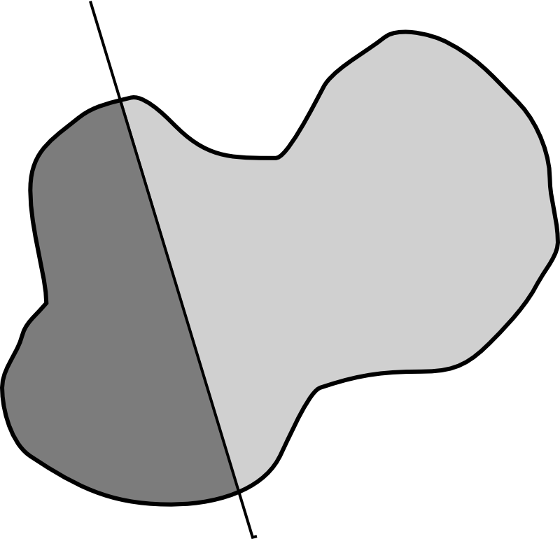

Conceptos básicos para el análisis espacial¶
Para proceder al análisis de los datos espaciales, deben conocerse antes las particularidades de estos. Algunas características propias de los datos espaciales hacen que, entre otras cosas, no sean aplicables algunos elementos de la estadística no espacial. Otras condicionan buena parte de las formulaciones que operan sobre ellos, y que iremos viendo en los sucesivos capítulos. Por tanto, abordar el estudio de estas formulaciones no se ha de hacer sin antes tratar con algo más de detalle las propiedades inherentes al dato espacial en lo que a su disposición para el análisis respecta.
Junto a esto, se presentan en este capítulo algunos conceptos fundamentales sobre geometría del plano y el espacio, y sobre las distintas relaciones entre entidades espaciales. Todos ellos son la base para crear análisis más complejos sobre datos espaciales. Unas nociones básicas de matemáticas son necesarias para poder comprender estas ideas.
Introducción¶
Trabajar con datos espaciales tiene una serie de implicaciones que han de considerarse con detenimiento antes de llevar a cabo cualquier análisis. A lo largo de esta parte del libro veremos formas muy distintas de analizar los datos espaciales para obtener resultados de índole variada, y todas ellas tienen en común el hecho de trabajar sobre este tipo particular de datos. Conocer en profundidad el dato espacial es, por tanto, imprescindible, no solo en lo relativo a su forma, su manejo y su almacenamiento —que ya fue visto en la parte correspondiente— sino también en lo referente a su análisis y cómo ha de tratarse e interpretarse la información que contiene —que lo veremos en el presente capítulo—.
Entendemos por dato espacial todo aquel que tiene asociada una referencia geográfica, de tal modo que podemos localizar exactamente dónde sucede dentro de un mapa (211). Dentro de esta definición se incluyen datos de campos (superficies) o datos asociados a objetos como puntos, líneas o polígonos. Es decir, todo cuanto puede recogerse según los distintos modelos de representación que ya hemos visto con anterioridad.
El objetivo de este capítulo es múltiple. Por una parte, presentar las principales particularidades de los datos espaciales, así como la formas de tener estas en cuenta a la hora del análisis. Por otra, estimular un correcto razonamiento espacial y un entendimiento adecuado tanto de las limitaciones como de la potencialidad de los datos espaciales como fuente del análisis geográfico. Y por último, presentar algunos de los fundamentos teóricos sobre los cuales se crean después todas las metodologías de análisis, las estadísticas espaciales, y los algoritmos que se detallarán en los capítulos sucesivos.
Estos fundamentos incluyen algunas nociones básicas sobre matemática del plano y el espacio, y conceptos sobre las posibles relaciones existentes entre objetos geográficos.
Particularidades de los datos espaciales¶
Considerar que el dato espacial es un dato cualquiera sin ninguna peculiaridad supone no realizar sobre él un análisis óptimo. Las características propias de los datos espaciales dotan a estos de una gran potencialidad de análisis, al tiempo que condicionan o limitan otras operaciones. Asimismo, estas particularidades son el origen de una gran parte de los retos aún existentes dentro del análisis geográfico, y por sus implicaciones directas no pueden desestimarse sin más. Su conocimiento es, por tanto, imprescindible para todo tipo de análisis espacial.
El carácter especial del dato espacial deriva de la existencia de posición. Esta posición se ha de entender tanto en términos absolutos (posición de una entidad en el espacio expresada por sus coordenadas) como relativos (relación con otras entidades también en dicho espacio). Las consecuencias de que todo dato espacial se halle por definición localizado a través de coordenadas son diversas, y deben enfocarse desde los distintos puntos de vista del análisis espacial. A continuación veremos los puntos más relevantes que deben considerarse a la hora de tratar con datos espaciales.
Algunos de estos puntos representan problemas que han de tenerse presentes en el análisis. Otros son simplemente conceptos básicos que deben conocerse pero no han de implicar necesariamente una dificultad asociada.
Escala¶
En el apartado Escala vimos con detalle el concepto de escala cartográfica, y cómo este se aplica de igual modo a la representación y gestión dentro de un SIG. Existe, además, otra forma de considerar la escala, y que resulta de especial interés para los contenidos de esta parte: la escala de análisis.
A la hora de estudiar la información geográfica, podemos hacerlo a distintos niveles y, dependiendo del nivel elegido, los resultados serán de una u otra naturaleza. Esto se manifiesta en las estructuras espaciales (véase más adelante en esta misma sección), que condicionan los valores que se derivan de sus análisis a través de las distintas formulaciones de análisis. Este hecho es fácil verlo con algunos ejemplos, que nos permitirán comprobar cómo a distintas escalas los datos geográficos tienen características distintas.
Por ejemplo, sea el conjunto de puntos de la figura 120. En el ejemplo a) se ve que los puntos se agrupan en conglomerados en zonas concretas del espacio. Esto es lo que denominaremos una estructura agregada. Sin embargo, si nos acercamos y solo enfocamos uno de dichos grupos, el de la parte superior izquierda —ejemplo b)—, la estructura que vemos claramente no responde a una estructura agregada, sino que los puntos se disponen más o menos equiespaciados. Es lo que se conoce como estructura regular. Dependiendo de a qué escala observemos y analicemos la estructura espacial del conjunto de puntos, esta resulta de un tipo o de otro.
Figura 120: Dependiendo de la escala de análisis, la estructura de un conjunto de puntos puede ser distinta.
La escala de análisis debe ir inseparablemente relacionada con el fenómeno que pretendemos analizar, ya que es esta la que le da sentido. Supongamos el caso de llevar a cabo un análisis del relieve. Dependiendo de a qué escala observemos dicho relieve, la imagen que obtenemos es muy distinta. A un nivel global, distinguimos las grandes cadenas montañosas, y el resto del relieve aparece más o menos llano. Si nos acercamos a alguna de esas zonas llanas, se aprecia un relieve que antes no percibíamos, con ondulaciones y accidentes orográficos de menor entidad, que son suficientes para apreciarse a esta escala, pero no a la escala global anterior. Siguiendo este proceso, podemos ir acercándonos progresivamente hasta que incluso un pequeño grano de arena constituya un relieve notable.
Si vamos a llevar a cabo un estudio de cómo el relieve influye en los movimientos de las masas de aire a nivel de todo el planeta, no tiene sentido estudiar las formas del relieve a este último nivel de máximo detalle. Como se muestra en la figura 121, si para definir las formas de relieve en un punto dado lo hacemos considerando dicho punto y los valores de elevación a su alrededor, la caracterización que hagamos varía en función de la dimensión de esa zona alrededor (que es la que define la escala de análisis). Para valores pequeños de dicha zona de análisis, el punto analizado puede definirse como una cima, mientras que aumentando la escala de análisis se advierte que el punto se sitúa en el fondo de un valle.
Figura 121: Dependiendo de la escala de análisis, un mismo relieve puede ser caracterizado como cima (a) o fondo de valle (b)
Por tanto, debemos observar el relieve desde la distancia correcta a la cual la información que nos proporciona es la más adecuada para un análisis dado. Además de existir una escala de mayor relevancia para un análisis concreto, lo cierto es que el conjunto de todas las escalas de análisis contiene en su totalidad una información más amplia que la correspondiente a una única escala, y por tanto resulta de interés el trabajar a múltiples escalas y combinar los resultados.
Este enfoque de escalas múltiples es relevante también en relación con los propios datos, independientemente de lo que representan. Es decir, independientemente de la escala y la dimensión real, y en relación solo con la escala definida por el formato de los mismos. Por ejemplo, en el caso de imágenes, el uso de operadores a diferentes escalas (referida aquí la escala al número de píxeles utilizados en el operador) es ventajoso para realizar ciertas operaciones tales como la detección de bordes (212) (véase Filtros de detección de bordes). Combinado esto con lo anterior, la importancia de la escala en el análisis espacial es de primer orden, y resulta necesaria su consideración en todo momento.
Podemos ver más ejemplos de cómo la escala de análisis condiciona los resultados obtenidos. Supóngase un elemento lineal tal como un camino o el contorno de una finca cuyo perímetro quiere medirse. Como puede verse en la figura 122, la unidad de medida empleada provoca que se obtengan resultados distintos. Para medir la longitud de la línea utilizamos una unidad mínima, que podemos asimilar a una especie de vara de medir. Todos los elementos de la línea que son menores que esa unidad mínima no se recogen. En el caso a) se obtiene un resultado de siete unidades. Si reducimos a la mitad la unidad, cabe esperar que la longitud sea el doble. Sin embargo, obtenemos un total de 17 unidades, de forma que la proporción entre el tamaño de nuestra vara de medida y el número de unidades resultante no se mantiene.
Figura 122: La unidad de medida empleada modifica el resultado obtenido.
Cuando esto sucede, podemos afirmar que carece de fundamento trabajar con una medida absoluta de longitud (u otro parámetro estudiado que se comporte de igual manera, tal como el perímetro de un área de estudio), y que esto solo tiene sentido dentro de un contexto dado que defina la forma en que los resultados son medidos y operados. La unión de un valor resultante con la escala a la que se ha obtenido tiene en conjunto pleno significado, pero en casos como el anterior el valor resultante por sí mismo carece de dicho significado. Otra solución es la definición de parámetros invariantes a la escala, que no se ven afectados por esta.
El concepto de fractal tiene una implicación directa en este hecho. Para saber más sobre fractales, la referencia clásica es (213).
Por último, y para concluir este apartado, señalar que las implicaciones de la escala para el análisis se incorporan incluso en la representación y almacenamiento de los datos espaciales. Así, una ciudad puede definirse como un punto a una escala dada, y como un polígono si nos acercamos lo suficiente y estudiamos una porción concreta con más detalle. En función de su uso, puede ser más conveniente tratar el elemento ciudad de una u otra manera, lo cual también afecta al análisis del mismo.
En realidad, los conceptos punto y línea no existen como tales en el espacio geográfico. Un elemento tal como un cauce o una línea de alta tensión, que se recogen ambos en una capa vectorial como líneas, en realidad tiene un grosor. Lo mismo sucede con los elementos puntuales. Un árbol no es un punto, sino en todo caso un círculo. Por motivos de escala hacemos la abstracción de considerar puntos o líneas, porque a la escala habitual dichos elementos (árboles, caminos, etc.) pueden considerarse como tales.
También el propio formato de almacenamiento condiciona el efecto de la escala. Para el caso de datos vectoriales, existe el límite impuesto por la imposibilidad de almacenar números decimales de la precisión deseada. Es decir, la limitación del mínimo valor que puede almacenarse. No obstante, este límite es varios órdenes de magnitud inferior al definido por la precisión de los instrumentos de medida, con lo que no es considerable.
Una situación distinta es la que sucede con los datos ráster, donde el tamaño de celda está indirectamente condicionando una escala. La medición de áreas y distancias se encuentra influida por el tamaño elegido. Del mismo modo que no podemos recoger los detalles mínimos de una curva al utilizar una vara de medir de mayor tamaño, en el caso de una capa ráster, todo aquello que suceda en una escala inferior a la definida por el tamaño de celda queda ignorado. La espacial resolución es, por tanto, un elemento directamente relacionado con los resultados del análisis cuando se utilizan datos ráster.
El Problema de la Unidad de Área Modificable¶
Uno de los problemas principales asociados al análisis de datos espaciales es el relacionado con la definición de unidades de análisis. Muchas de las variables con las que trabajamos dentro de un SIG no pueden medirse de forma puntual, y por ello han de estudiarse para un área dada. Ejemplos de este tipo de variables son el porcentaje de población en un rango de edad determinado o la densidad media de población.
Las áreas que se definen para poder trabajar con las variables de esta índole son esencialmente arbitrarias. Por ejemplo, podemos estudiar el porcentaje de la población dentro de un intervalo de edad a nivel de país. La unidad país se establece sin ningún criterio propio del análisis espacial, de igual modo que podría haberse realizado el mismo análisis a nivel de continente o de comarca, todas ellas divisiones por completo arbitrarias. No obstante, la utilización de una u otra unidad es problemática, ya que altera los resultados extraídos de las variables estudiadas.
Este problema, por tener relación con la elección de la unidad de agregación de la información, se conoce como Problema de la Unidad de Área Modificable*(PUAM) :cite:p:`Openshaw1983Geobooks` (*Modifiable Areal Unit Problem, MAUP), y ha sido ampliamente estudiado en la literatura. Formalmente, puede definirse como un problema causado por la imposición de unidades artificiales de definición espacial en fenómenos geográficos continuos, teniendo ésto como consecuencia la generación de patrones artificiales (214). Aunque no se trata de una cuestión de reciente descubrimiento, la aparición de los SIG y las mayores capacidades de análisis que estos han propiciado ha atraído de nuevo el interés sobre el Problema de la Unidad de Área Modificable.
Los efectos del PAUM se pueden dividir en dos componentes: uno relacionado con la escala y otro relacionado con la agregación. El efecto de escala describe la variación de los resultados obtenidos en relación con el número de zonas en que se divide el total de la zona de estudio. Es decir, el tamaño de las unidades. Este efecto esta claramente relacionado con lo visto en el punto anterior.
Por su parte, el efecto de zonificación hace referencia a las diferencias que se producen cuando la información se agrega a una escala distinta. Por ejemplo, si se miden los datos de densidad de población por términos municipales, y posteriormente estos se agregan para presentarse por comunidades autónomas, ese cambio en la unidad de definición da lugar a diferencias en los valores resultantes.
Para darse cuenta de la importancia de este hecho, debe considerarse que una buena parte de la información geográfica que utilizamos en un SIG ha sido recogida originalmente a una escala distinta, y en ocasiones ha sufrido una agrupación en unidades mayores por motivos de mera facilidad de manejo.
Ambos efectos, el de zonificación y el de escala, no son independientes, sino que están íntimamente relacionados. La intensidad con que estos dos efectos afectan al análisis es variable, y existe asimismo una componente aleatoria. En líneas generales, el uso de unidades pequeñas implica que el número de elementos contenidos en las mismas es menor y por lo tanto estadísticamente menos fiable. En el extremo contrario, el uso de unidades grandes da valores estadísticamente más fiables pero oculta la variación que se produce dentro de las propias unidades. (215).
A pesar de tener una clara importancia en el análisis geográfico, las soluciones a la problemática que la definición de un área unitaria conlleva no son claras. Tradicionalmente se considera que se trata de un problema intratable. No obstante, algunos estudios (216) indican que existe un cierto grado de regularidad en los valores estadísticos agregados, dependiente de la autocorrelación espacial (ver siguiente punto) y la configuración de la variable.
Puede afirmarse que el Problema de la Unidad de Área Modificable es aún materia de amplio estudio, y el objeto de este estudio, que no es otro que el poder calcular los valores de los datos a la resolución espacial original (es decir, sin que los efectos de zonificación tengan relevancia), en caso de poder alcanzarse, requerirá un análisis sin duda complejo.
Un problema particular relacionado con el PUAM es la denominada falacia ecológica (217), que consiste en asumir que los valores calculados para una unidad de área pueden aplicarse a los individuos de la población existente en dicha área. Sólo en el caso de que exista una completa homogeneidad para la variable analizada, lo cual muy raramente sucede, la anterior suposición sería cierta.
Autocorrelación espacial¶
Supóngase que se estudian una serie de poblaciones cercanas en las cuales se mide el porcentaje de personas afectadas por una determinada enfermedad infecciosa. Cabe esperar que, puesto que los habitantes de esas poblaciones están relacionados entre sí de diversas formas, la distribución de los valores recogidos obedezca en parte a la existencia de dichas relaciones. Por ejemplo, si en una población contraen la enfermedad un número dado de habitantes, es más factible que estos puedan contagiar a los de las poblaciones cercanas que a los de otros núcleos más alejados.
Por lo anterior, es probable que alrededor de una población con muchos casos de la enfermedad haya otras también con un elevado número de afectados, mientras que una población con pocos casos esté rodeada de otras también con escasa afección. Un comportamiento similar lo encontraríamos si midiéramos la concentración de un tóxico en distintos puntos de un embalse, ya que alrededor de un punto de alta concentración no parece lógico esperar concentraciones bajas.
Ejemplos como los anteriores cumplen lo que se conoce como Primera Ley Geográfica de Tobler (218), que establece que todo está relacionado con todo, pero las cosas próximas entre sí están más relacionadas que las distantes.
De modo más formal, el termino autocorrelación espacial hace referencia a lo reflejado en los ejemplos anteriores, es decir, a la existencia de una correlación de la variable consigo misma, de tal modo que los valores de esta variable en un punto guardan relación directa con los de esa misma variable en otros puntos cercanos.
En el caso de la enfermedad infecciosa o la concentración del producto tóxico, los valores altos suelen tener en su entorno valores también altos, y de modo similar sucede para valores bajos. Se dice que existe una autocorrelación espacial positiva. Puede, no obstante, existir una autocorrelación espacial negativa, si los valores altos se rodean de valores bajos y viceversa.
En caso de no existir ningún tipo de autocorrelación espacial, se tiene que los datos recogidos en una serie de puntos son independientes entre sí y no se afectan mutuamente, si que tenga influencia de la distancia.
La figura 123 muestra unas sencillas capas ráster en las que se presentan los tres tipos de autocorrelación espacial anteriores.
Figura 123: Autocorrelación espacial positiva (a). Autocorrelación espacial negativa (b). Ausencia de autocorrelación espacial (independencia) (c)
Las consecuencias de la existencia de autocorrelación espacial son numerosas y de gran importancia.
Por una parte, muchos de los análisis estadísticos suponen la independencia de la variable. Puesto que existe una dependencia de la componente espacial, será necesario para obtener resultados correctos introducir dicha componente espacial como una variable más.
Existiendo autocorrelación espacial, y siendo esta positiva, la inferencia estadística es menos eficaz que si se cuenta con un número igual de observaciones de una variable independiente. Es decir, se pierde parte de la capacidad explicativa de los datos. Esto se materializa en mayores varianzas en las estimaciones y peores ajustes de modelos, entre otras consecuencias.
Puede, no obstante, sacarse también provecho de la existencia de una dependencia espacial. Puesto que los puntos cercanos a uno dado guardan relación con este, pueden emplearse para estimar su valor, siendo este el fundamento principal de los distintos métodos de interpolación (Capítulo Creación de capas ráster).
En lugar de incorporar la autocorrelación espacial como un elemento más, otra forma de proceder es analizar la intensidad de esta para ver en qué medida lo anterior es cierto o no. Así, el estudio de la autocorrelación espacial puede servir para juzgar si procede la aplicación de métodos estadísticos que no consideren la dependencia espacial. Como veremos en el capítulo Estadísticas espaciales, si a través de los valores de los indicadores correspondientes podemos aceptar la hipótesis nula de ausencia de dependencia espacial, entonces los inconvenientes anteriormente citados pueden no existir.
Como ya venimos observando, el conjunto de conceptos básicos sobre datos espaciales que estamos viendo en esta sección no es un conjunto de elementos independientes. Por ejemplo, la autocorrelación espacial se halla directamente ligada con el concepto de escala, y un cambio de escala puede hacer que la autocorrelación cambie de signo (219). Veamos un ejemplo.
Sea un monte en el que los árboles grandes están separados una distancia dada por el efecto de la competencia, y entre los cuales crecen los árboles más pequeños. Supongamos que la distancia media entre árboles grandes es de unos 20 metros. Si hacemos un muestreo en el que medimos la altura media de los árboles en parcelas separadas aproximadamente cada 10 metros, es probable que midamos alternamente una parcela con un árbol grande y una con algunos pequeños, de forma que tendremos una marcada autocorrelación espacial negativa. Si por el contrario medimos parcelas de un metro de radio separadas a su vez un metro, mediremos muchas parcelas cercanas en las que solo entrarán árboles pequeños que se agrupan bajo los grandes, de tal forma que la autocorrelación espacial que obtendremos será positiva.
Es importante considerar todos estos factores de forma global, pues todos ellos tienen importancia y afectan al trabajo con datos geográficos.
Existencia de estructura¶
Tanto la disposición de los datos como las propiedades de la variable estudiada (por ejemplo, la propia autocorrelación espacial como propiedad intrínseca), exhiben una estructura determinada. En la figura 124 pueden verse dos conjuntos de puntos distintos, sobre los cuales cabe plantearse si los resultados obtenidos de su análisis pueden darse como igual de fiables. Puesto que la estructura espacial de ambos es distinta y la componente espacial juega un papel importante, esta estructura puede condicionar los resultados y tener influencia sobre estos.
Figura 124: Dos estructuras distintas con diferentes implicaciones a la hora del análisis de los datos que representan
Por ejemplo, vemos que en el patrón b) los puntos se hallan más agrupados, mientras que en el a) los puntos están distribuidos uniformemente a lo largo de la extensión de la zona de análisis. Si existe autocorrelación espacial positiva, la información recogida en el patrón b) es mucho menos representativa, ya que los puntos cercanos recogen información en cierta medida redundante. A pesar de disponer de un numero \(n\) de valores recogidos en otros tantos puntos, el análisis estadístico de estos no es tan preciso como si se dispusiera de \(n\) observaciones independientes. En realidad, los resultados que obtendremos serán como si hubiéramos muestreado un número menor de puntos que los que realmente tenemos.
Los dos principales conceptos estadísticos que definen la estructura espacial de los datos son la estacionaridad y la isotropía. Estos se estudian principalmente en relación a los denominados efectos de primer y de segundo orden. El efecto de primer orden es el valor esperado, es decir, la media. El de segundo orden es la covarianza entre distintas zonas.
La estacionaridad indica que el proceso es invariante a la traslación. Es decir, que las propiedades son constantes en el espacio y no existe tendencia alguna. La isotropía indica que el proceso es invariante a la rotación. Un proceso cuyas propiedades de segundo orden son isotrópicas es aquel en el que la covarianza presenta la misma variación en todas direcciones.
Veremos en diversos puntos de esta parte del libro como la presencia de isotropía o su ausencia (anisotropía) tiene importancia a la hora de realizar distintos tipos de análisis.
Existencia de tendencias espaciales¶
Podemos decir que existe una tendencia espacial cuando los valores de una variable están relacionados con sus propias coordenadas geográficas. Por ejemplo, existe una tendencia a que la temperatura disminuya conforme nos alejamos del ecuador. Por ello, en un mapa de temperaturas para una región lo suficientemente amplia, cabe esperar valores menores en el extremo más distante del ecuador.
El dato de localización geográfica plantea un contexto dentro del cual se sitúan los restantes valores, en este caso, la temperatura observada. Esto hace que el mismo valor de una variable no tenga el mismo significado cuando aparece en un punto que cuando lo hace en otro. No es lo mismo un valor de temperatura de 40:math:^circ C en Madrid que en Oslo. El valor en sí es idéntico, pero su interpretación es distinta.
Conocer las tendencias existentes para una variable nos ayuda a comprender mejor esta y analizarla de forma correcta. Si es posible cuantificar dicha tendencia, resulta factible eliminar su influencia de los datos, de forma que estos ya no se vean afectados por ella, o bien considerarla explícitamente como parte del análisis.
Las consecuencias de la existencia de tendencias son similares a las que se derivan de la presencia de autocorrelación espacial, ya que invalidan el supuesto de independencia de los datos.
Efectos de borde¶
Las zonas que estudiamos dentro de todo análisis espacial tienen unos límites establecidos. Estos límites vienen definidos de forma artificial —el límite de la fotografía aérea de la que disponemos, por ejemplo— o bien de forma natural —si estudiamos un bosque junto a un pantano, el bosque encuentra su límite al borde de este último—.
Imaginemos un caso como este segundo y observemos la figura 125. Si dentro del bosque los árboles están plantados de forma regular (supongamos que es una repoblación con un marco fijo), se puede decir que en cualquier punto dentro de esa masa existe una densidad constante. En otras palabras, si nos situamos en cualquier punto de dicha masa, ya sea cerca o lejos del borde, los árboles están plantados con una misma densidad. No obstante, para el cálculo de la densidad necesitamos establecer un área de análisis puesto que no es una variable que pueda computarse puntualmente. Sin embargo, en las zonas de borde una parte de dicho área cae fuera de la masa de bosque, con lo que el número de pies será menor (ya que no hay árboles en la zona limítrofe, es decir, el embalse), y por tanto también lo será la densidad.
El efecto de borde no es independiente de otros elementos como la escala, ya que la escala de análisis tiene un influencia directa en él. Como se ve en la propia figura 125, el porcentaje del círculo de análisis que queda fuera de la zona de bosque es distinto en función del tamaño de dicho círculo.
Otros análisis que en breve veremos hacen uso de un mecanismo similar. Por ejemplo, analizando el número de puntos situados a una distancia menor que un umbral dado. En los puntos cerca del borde, la presencia de dicho borde va a distorsionar los valores calculados. Como también veremos, las distintas formulaciones tienen en muchos casos expresiones corregidas que modifican los valores obtenidos en función de la distancia al borde.
Figura 125: Representación del efecto borde y cómo este afecta en mayor o menor medida en función de la escala de análisis. Las zonas en trazo continuo no se ven afectadas. Las zonas en trazo punteado están afectadas de efecto de borde en diferente grado.
En general, es importante considerar los efectos de borde para saber si los valores calculados dentro de cualquier análisis estadístico son válidos o no. Cuando nos encontramos lo suficientemente cerca de un borde (sea este uno artificial como el borde de la capa o uno natural dentro de la propia capa tal como el mencionado límite de un bosque), la información que derivamos de los datos espaciales puede ser incoherente con la realidad.
Veremos ejemplos variados a lo largo de los siguientes capítulos, no solo relacionados con el análisis de datos puntuales como en los casos comentados anteriormente. En el apartado Funciones focales veremos cómo el efecto de borde afecta a un tipo particular de análisis sobre capas ráster. En otros casos, el efecto de borde no se manifiesta únicamente para puntos cercanos a dicho borde, sino para todos aquellos relacionados o conectados con él, con independencia de su distancia a este. Veremos este caso en el apartado Área acumulada y parámetros derivados.
Con relación a este último supuesto, no debe olvidarse nunca que los procesos que estudiamos y que analizamos a través de la información espacial están influenciados por otros procesos que pueden estar fuera del marco delimitado sobre el que trabajamos, alejados de él e incluso a una escala distinta. Así, estudiar la vegetación de una zona dada implica estudiar el clima que la condiciona. Aunque el relieve y las condiciones locales son los que afectan a este en primera instancia, el clima es un proceso global que opera a una escala mayor a la de la zona cuya vegetación estudiamos, y efectos fuera de dicha zona pueden tener repercusión sobre ella.
Localización representada¶
Como veíamos al tratar el Problema del de Unidad de Área Modificable, algunas de las variables geográficas requieren un área para ser recogidas, y no pueden hacerse de forma puntual. En otros casos, la necesidad de establecer unidades no puntuales no viene motivada por la variable recogida o la estructura geográfica que se estudia, sino por la forma de almacenar la información de dicha variable. Tal es el caso del modelo ráster, en el que el territorio se divide en unidades geométricas arbitrarias, generalmente unidades regulares de forma cuadrada.
Para cada una de estas unidades, se tiene un valor de la variable estudiada, pero lo que dicho valor representa en el territorio puede variar en función del criterio establecido. Como se recoge en la figura 126, en la cual la variable recogida es la elevación, el valor de cada celda puede ser la elevación en el centro de la celda o bien el valor medio de toda ella, entre otras opciones posibles.

Figura 126: El valor recogido en una unidad puede interpretarse con distintos criterios. a) Media de la celda. b) Valor en el punto medio.
Este tipo de cuestiones deben considerarse al trabajar con los datos espaciales, y homogeneizar los criterios en la medida de lo posible, siempre considerando la naturaleza de la variable recogida.
Algunos cálculos espaciales básicos¶
La mayor parte de los análisis espaciales hacen uso de cálculos geométricos sencillos, a partir de los cuales se construyen algoritmos más complejos. Veremos en esta sección esos cálculos básicos, que constituyen los fundamentos del análisis geométrico tanto en el plano como en el espacio.
La idea de distancia es fundamental para todo análisis espacial. En el plano, la distancia euclídea entre dos puntos dados es
En el análisis geográfico es habitual utilizar la denominada distancia de Manhattanfootnote{Se denomina así debido a que es similar a la recorrida por las calles regularmente dispuestas tales como las de la ciudad de Manhattan.}, cuya expresión es
Tanto la distancia euclídea como la de Manhattan son casos particulares de las denominadas métricas LP, que responden a una expresión de la forma
En el caso de ser \(p=1\) se tiene la distancia de Manhattan, y para \(p=2\) la distancia euclídea.
Cuando se utilizan capas ráster, el concepto de distancia puede entenderse de un modo distinto. Como resulta lógico, puede aplicarse la distancia euclídea entre los centros de las celdas, pero en ciertos casos puede ser conveniente trabajar no en coordenadas geográficas, sino de celdas, ya que, como sabemos, el espacio se divide en un número finito de estas en una capa ráster. Por esta razón, y puesto que las coordenadas de celda son expresadas en números enteros de la forma (fila, columna), resulta además conveniente que esa distancia sea también un valor entero (220).
Sobre este planteamiento pueden definirse distintos tipos de distancia ráster considerando principalmente el número de celdas por las que debe pasarse para ir de una celda a otra. Por ejemplo, si se permite el movimiento en todas direcciones, la distancia desde una celda a las ocho que la rodean es igual a 1 en todos casos, pues se realiza en un único paso. Por similitud a la forma en que uno puede moverse en un tablero de ajedrez, este tipo de distancia se conoce como distancia de tablero de ajedrezfootnote{Chessboard distance}.
Si, por el contrario, se permite tan solo el movimiento en dirección vertical y horizontal, la distancia a las celdas diagonales —por ejemplo, desde la celda \((x, y)\) hasta la \((x + 1, y + 1)\)— es igual a 2. En este caso tenemos la anteriormente mencionada distancia de Manhattan.
En la figura 127 pueden verse los valores de distancia entre una celda central y sus circundantes según las definiciones de distancia anteriores, junto con otras como la distancia ortogonal o la distancia Chamfer 3–4 (221). El objetivo de estas distancias es mitigar en cierta medida la distorsión que se produce con las otras distancias ráster a medida que aumenta el alejamiento.
Figura 127: Distintos tipos de distancia ráster: a) tablero de ajedrez, b) Manhattan, c) ortogonal, d) Chamfer 3–4
El análisis de costes se lleva a cabo en un SIG esencialmente en formato ráster, por lo que lo anterior es de importancia al respecto, y será extendido en el capítulo Costes, distancias y áreas de influencia.
Además de hallarse las distancias entre puntos concretos, pueden calcularse entre geometrías. La distancia entre dos rectas en el plano es igual a la distancia entre un punto cualquiera de una de ellas a la otra en el caso de que sean rectas paralelas. Si no lo son, la distancia es nula, ya que existirá un punto en el que se corten. No obstante, no ha de olvidarse que en un SIG habitualmente no trabajamos con rectas de longitud infinita en el sentido matemático, sino con segmentos de estas.
La distancia de un segmento definido por sus extremos \((x_1, y_1)\) y \((x_2, y_2)\) a un punto de coordenadas \((x_3,y_3)\) se calcula como la distancia de este último hasta la intersección de la recta que pasa por el mismo y es perpendicular al segmento. Dicho punto de intersección tiene por coordenadas
donde \(u\) se calcula según
.
La distancia entre un punto y un polígono es la de dicho punto a la línea que contiene al segmento más cercano de cuantos componen el perímetro del polígono.
Para el caso de polígonos, dos son las magnitudes principales: área y perímetro. El área se calcula aplicando la fórmula
donde se considera que el vértice \(n+1\) se corresponde con el primero, esto es, el polígono es una polilínea cerrada.
Para aquellos polígonos que contengan huecos, basta restar del área total la correspondiente a esos huecos. Esta última se calcula de igual modo, ya que los huecos están definidos de forma similar por un conjunto de puntos conectados.
El perímetro de un polígono es la suma de las distancias entre vértices consecutivos, es decir,
Además de los anteriores, un parámetro de interés también para polígonos es el centro de gravedad, cuyas coordenadas se calculan según
La medida del área y de la longitud de un elemento lineal como el perímetro de un polígono o una recta, pueden llevarse a cabo para datos en formato ráster de una forma distinta. Para el caso del área basta contar el número de celdas del polígono y multiplicarlo por el área de una única celda. En el caso de la longitud, basta sumar la longitud total de todos los lados exteriores, esto es, de aquellos que no son contiguos a otra celda del polígono. Todos estos cálculos se establecen en función del tamaño de celda como magnitud base. Para el cálculo del centroide, este es el centro de masas calculado como si cada celda perteneciente al polígono fuese una masa puntual unitaria.
Para concluir, un sencillo análisis entre un punto y un polígono, el cual utilizaremos frecuentemente, es la comprobación de si este punto se encuentra dentro o fuera del polígono. Para ello existen diversas metodologías, pero la más habitual es la basada en el número de veces que una semirecta con origen en el punto cruza el borde del polígono. El algoritmo es como sigue (222):
- Se traza una recta desde el punto en cuestión hasta un punto fuera del polígono. Lo habitual es considerar la semirecta horizontal desde el punto dado y bien en la dirección positiva o bien en la negativa.
- Se cuenta el número de veces que dicha semirecta corta la frontera del polígono.
- Si el número de cortes es par, el punto se encuentra fuera. Si es impar, el punto se encuentra dentro.
En la figura 128 se muestra un ejemplo de lo anterior.
Figura 128: Pertenencia de un punto al interior de un polígono en función del numero de cortes entre la frontera de dicho polígono y una semirecta con extremo en dicho punto.
La pertenencia o no del punto al polígono queda definida así en todos los casos, salvo cuando el punto está en la propia frontera o bien la semirecta coincide en algún tramo con el contorno, en cuyo caso resulta imposible el cálculo del número de cortes (Figura 129).
Figura 129: Problemas de la metodología para determinar si un punto se encuentra en el interior de un polígono cuando la semirecta coincide parcialmente con la frontera.
Relaciones espaciales¶
Como ya sabemos, conceptos tales como la posición o el tamaño, son básicos para el análisis geográfico, pues derivan de la propia georreferenciación inherente a todo dato espacial. El hecho de que exista dicha referencia en el espacio es responsable de que los mismos valores de una variable no tengan igual significación en unos lugares que en otros, y que estos lugares no solo se consideren en términos absolutos, sino también relativos entre los distintos datos espaciales.
La importancia de esta posición relativa ya la vimos al tratar la autocorrelación espacial, ya que una misma serie de valores, si se disponen de una forma distinta, pueden presentar un signo distinto de autocorrelación espacial, con las consecuencias que ello tiene.
Si pensamos por ejemplo en el uso de otro tipo de información geográfica tal como la de un callejero urbano para orientarnos en una ciudad, utilizamos ideas tales como la Calle Mayor *es paralela a esta avenida* o El teatro al que me dirijo está *detrás de ese bloque de edificios*. Existe de igual modo una relación entre los distintos elementos, que es la que permite que podamos analizar y explotar la información geográfica, pues esta en gran medida no tiene sentido como una colección de datos aislados.
Así pues, resulta claro que los distintos elementos con los que trabajamos dentro de una o varias capas de información geográfica se relacionan entre sí. Estas relaciones pueden obedecer a diversos criterios y son la base de un gran número de distintos procedimientos que las estudian y generan resultados en función de ellas.
De entre dichas relaciones, algunas son de tipo topológico y otras se fundamentan no en la topología existente pero sí en otras propiedades de tipo espacial, por ejemplo propiedades métricas como la distancia. Además de lo anterior, existen muchos otros criterios en base a los cuales pueden clasificarse las relaciones.
En esta sección daremos una definición formal de los principales tipos de relaciones y, especialmente, de los razonamientos que dan lugar a estos criterios y son claves para comenzar a entender el análisis espacial tal y como este se presenta en un SIG. De esta forma, posteriormente podremos aplicar estas relaciones con claridad a los distintos datos geográficos.
(223) propone los siguientes tipos de relaciones espaciales:
- Relaciones direccionales, que describen el orden en el espacio. Por ejemplo, al norte de, al sur de, etc.
- Relaciones topológicas, las cuales describen la vecindad e incidencia. Por ejemplo, son disjuntos o son adyacentes.
- Relaciones comparativas, que describen la inclusión. Por ejemplo está en.
- Relaciones de distancia, tales como lejos de o cerca de.
- Relaciones difusas tales como al lado de o a continuación.
Las relaciones espaciales pueden establecerse entre todas las combinaciones posibles de entidades geográficas. Por nombrar algunos ejemplos, las siguientes cuestiones se refieren a relaciones entre objetos geográficos de diversa índole:
- ¿Se encuentra esta localización a menos de 100 metros en línea recta de algún camino? (relación entre un punto y una recta)
- ¿Cruza ese camino algún área protegida? (relación entre una recta y un polígono)
- ¿Cruza ese camino bajo alguna línea de alta tensión? (relación entre dos líneas)
- ¿Existe algún área urbanizada contigua a ese área protegida? (relación entre dos polígonos)
Asimismo, las relaciones pueden establecerse entre elementos con un mismo tipo de información, o bien entre tipos distintos. Los anteriores son ejemplos de este último caso. Un ejemplo del primero podría ser la relación de proximidad entre dos emplazamiento puntuales de una misma clase (¿existe una farmacia a menos de un kilómetro de esta otra farmacia?).
Dentro de un SIG, las relaciones topológicas tienen utilidad en los procesos de análisis implementados como tales, pero también en otras partes de un SIG que, constituyendo análisis propiamente dichos, quizás no se perciben como tales. Por ejemplo, las herramientas de selección de entidades dependen de las relaciones espaciales que estas presentan con el objeto empleado como criterio de selección, ya sea este un punto concreto que el usuario escoge con el ratón, un área rectangular delimitada de igual modo, o las entidades de otra capa adicional, entre otros.
A la hora de clasificar y definir las relaciones espaciales deben considerarse tres enfoques principales: un enfoque netamente matemático, un enfoque psicológico y un enfoque geográfico. El enfoque matemático pretende formalizar con un lenguaje matemático las distintas relaciones, de forma que puedan estudiarse y analizarse a través de las herramientas matemáticas habituales, tanto topológicas como espaciales. Por su parte, el enfoque geográfico surge según se desarrollan los Sistemas de Información Geográfica y aparece la necesidad de expresar las relaciones espaciales de un modo adecuado para implementar estas, así como los distintos algoritmos que se sustentan en ellas. Puede entenderse en cierta forma como una versión práctica del enfoque matemático.
Tanto el enfoque matemático como el geográfico son netamente cuantitativos pero a la hora de comunicar algún tipo de conocimiento espacial que lleve implícita una relación espacial, lo hacemos principalmente de forma cualitativa (224) (225).
Así, al indicar a otra persona si se puede llegar rápidamente a una dirección dada dentro de la ciudad, no decimos el parque al que quieres ir está contenido dentro de un radio de 1,2 km sino que diremos algo como sí, está cerca, se puede llegar andando. En nuestro pensamiento espacial y en el lenguaje que utilizamos para expresarlo, no es necesaria la precisión cuantitativa, que sin embargo sí se requiere para plantear otros modelos de relaciones. Entender las relaciones espaciales cualitativas para poder implementarlas en una herramienta lógica como un SIG es en esencia un problema de traducción entre un lenguaje natural y uno formal (226).
La forma en que los SIG incluyen las relaciones espaciales para sus propósitos debe combinar todos estos enfoques con objeto de conseguir que el razonamiento espacial pueda transmitirse de forma sencilla y lo más efectiva posible. Teniendo en cuenta esto, autores como (227) argumentan que, en la actualidad, la falta de un sistema de relaciones espaciales completo que dé respuesta a todas las necesidades que se plantean, es uno de los principales escollos para un mayor desarrollo de la disciplina de los SIG. El problema, no obstante, no presenta una solución sencilla, ya que, como hemos visto, los criterios a aplicar pueden ser muy variados y las ideas matemáticas han de combinarse igualmente con los elementos perceptivos acerca de cómo estas relaciones se entienden y se interpretan (228).
Lo habitual dentro de un SIG es la conversión de los conceptos del lenguaje natural (cualitativos) en elementos cuantitativos, de forma que estos pueden después tratarse con las herramientas de algún sistema formal de relaciones. Este planteamiento, aunque potente, puede no ser adecuado para según qué casos. El futuro de los SIG pasa por ser capaz de manejar de forma integrada las relaciones cualitativas, de forma que se aumente la usabilidad para aquellos usuarios que no disponen de un conocimiento de los sistemas formales, pero pueden sin embargo plantear cuestiones espaciales en el lenguaje habitual.
Es importante reseñar que las relaciones geográficas, sea cual sea el criterio por el que se definan, no están condicionadas de forma alguna al tipo de almacenamiento del dato espacial (vectorial, ráster, etc) u otras características arbitrarias del mismo. Son, por el contrario, conceptos puramente teóricos sobre elementos situados en el espacio, los cuales pueden aplicarse a cualquier objeto con independencia de cómo este haya sido recogido. No obstante, la forma de almacenamiento condiciona en cierta medida las relaciones existentes o, al menos, la forma en que estas relaciones se incluyen en el propio almacenamiento. Así, para el caso por ejemplo de una capa ráster, tenemos una estructura regular de elementos relacionados entre sí de tal forma que son contiguos y están a una misma distancia. Es decir, con una relación topológica y otra métrica que se mantienen constantes para todos los elementos unitarios mediante los cuales se almacena la capa.
Relaciones topológicas¶
Entrando en la propia definición de relaciones, el conjunto principal de estas es el formado por las de tipo topológico, que serán por ejemplo las que empleemos para combinar las geometrías y elementos de dos capas vectoriales según cómo sean dichas relaciones entre ellas. De entre estas relaciones destacan los denominados predicados espaciales, que son operaciones de tipo lógico que nos indican si entre dos objetos geográficos existe o no un tipo de relación dada. Se consideran estos objetos en \(\mathbb{R}^2\), es decir, como objetos planos.
La definición formal de estos predicados ha sido motivo de abundante estudio desde la aparición de los SIG, en parte motivado por la mayor necesidad que de tal formalismo se tiene si se pretende estructurar adecuadamente todas las operaciones de análisis que un SIG puede contener.
Uno de los sistemas iniciales de predicados es el conocido como 4–Intersection (229). Según este modelo, la relación entre dos objetos A y B queda definida por las intersecciones entre las fronteras (\(\delta A\) y \(\delta B\)) y los interiores (\(A\) y \(B\)) de estos. Se tienen así cuatro intersecciones con las que se conforma una matriz que caracteriza la relación existente.
Para cada una de las cuatro intersecciones se estudia algún invariante topológico, es decir, alguna propiedad que sea invariante a las transformaciones topológicas. De entre ellas, lo más habitual es emplear el contenido, esto es, si la región delimitada por la intersección esta vacía (\(\varnothing\)) o no (\(\neg \varnothing\)).
Teniendo cuatro elementos y dos posibles valores para cada uno, existen un total de \(2^4 = 16\) diferentes matrices con la forma anterior. De estas, ocho pueden darse en un plano entre objetos bidimensionales con fronteras cerradas, cada uno de los cuales define una región. Estas ocho relaciones son las mostradas en la figura 130, con sus matrices características correspondientes.

Figura 130: Conjunto de relaciones posibles entre regiones según el modelo 4–Intersection.
Un razonamiento similar puede aplicarse al caso de líneas, cuya principal diferencia radica en que conforman elementos con fronteras no cerradas. No obstante, la forma de proceder y las relaciones definidas son análogas en gran medida.
A partir del modelo 4–Intersection, Egenhofer (229) desarrolla el modelo 9–Intersection, en el cuál se amplia el anterior a la consideración de tres elementos en lugar de dos. Además de considerar las fronteras e interiores de los objetos A y B, se consideran asimismo los exteriores de los mismos (\(A^-\) y \(B^-\)). La matriz característica queda entonces de la forma
El numero total de matrices posibles es en este caso de \(2^9 = 512\). De todas ellas, solo un pequeño subconjunto representan relaciones posibles en \(\mathbb{R}^2\) a las cuales pueda asignarse una interpretación geométrica.
Por ejemplo, la matriz siguiente, en la que todos los elementos son el conjunto vacío, resulta imposible de obtener con ningún tipo de relación.
Dependiendo del tipo de objetos sobre el que se den las relaciones, el modelo 9–Intersection amplía al 4–Intersection de una u otra forma.
En el caso de dos regiones, se tienen ocho posibles relaciones, por lo cual no existe diferencia entre ambos modelos.
Para el caso de dos líneas en \(\mathbb{R}^2\), aparecen 25 nuevas relaciones. En caso de considerar líneas ramificadas (con más de dos puntos extremos), aparecen además 21 relaciones adicionales. Por último, para el caso de una línea y una región, se tienen un total de 19 relaciones posibles, 20 en el caso de admitirse líneas ramificadas.
Índices métricos¶
Pese a su aparente complejidad y completitud, el modelo 9–Intersection deja de lado otra serie de relaciones posibles, tales como las basadas en distancias u orientaciones, las cuales son en muchos casos más cercanas al habla común y al enfoque perceptivo y lingüístico del razonamiento espacial. Estas relaciones pueden formalmente definirse no a través de predicados como los establecidos por los modelos anteriores, sino cuantificándose mediante índices diversos. El uso de estos índices enriquece la definición de las distintas relaciones expresadas mediante un modelo como el 9–Intersection, añadiendo información acerca de la naturaleza exacta de estas.
Por ejemplo, si dos regiones de una hectárea se intersecan, no es lo mismo que lo hagan dando lugar a una intersección de media hectárea que a una de 100 metros cuadrados. Topológicamente, se trata de la misma relación, pero está claro que, en la práctica, las implicaciones de una u otra intersección son bien distintas.
Dependiendo de los tipos de entidades que se consideren, existen distintos índices que cuantifican la relación existente. (230) propone para el caso de una región y una línea el análisis en términos métricos de las siguiente propiedades:
- Subdivisión. Se definen índices que describen la forma en que la frontera, interior y exterior de la región subdivide a la frontera y el interior de la línea. Estos índices tratan, entre otros aspectos, la forma en que la línea divide el interior de la región, el exterior de esta (pudiendo generar áreas delimitadas por la línea y la región en el exterior de esta última), la relación entre la frontera de la región y la línea, o cómo el perímetro de la región puede quedar dividido en distintos tramos por las intersecciones con la línea.
Por ejemplo, la relación de subdivisión del área interior (internal areasplitting ratio(IAR)), (Figura 131), se define cómo el mínimo área de las dos que quedan a cada uno de los lados de la línea dentro de la región, dividido por el área total de región.
\[IAR = \frac{a_{min}}{a_{total}}\]Figura 131: Esquema de la forma en que una línea divide a una región. La menor de las dos (en oscuro), dividida por el área total, define la relación de subdivisión del área interior.
Para una descripción más detallada de otros índices puede consultarse la referencia original.
Cercanía. Los índices de cercanía cuantifican el alejamiento entre partes disjuntas de los objetos relacionados. Para su cálculo, se utilizan medidas de distancia como las descritas en Algunos cálculos espaciales básicos. Cuatro son los índices definidos, que miden
- La distancia entre la frontera de la línea y la de la región, cuando la línea está en el exterior de la región.
- La distancia entre la frontera de la línea y la de la región, cuando la línea está en el interior de la región.
- La distancia del recorrido mínimo entre el interior de la línea y la frontera de la región si el interior de la línea está en el exterior de la región.
- La distancia del recorrido mínimo entre el interior de la línea y la frontera de la región si el interior de la línea está en el interior de la región.
Para el caso de dos líneas, (231) propone estudiar también las mismas propiedades — subdivisión y cercanía —, desarrollando un planteamiento similar. (225), por su parte, añade elementos direccionales a las relaciones entre líneas, definiendo un ángulo local (el ángulo puntual en el punto de corte) y uno global (el definido por las direcciones globales de las líneas). Asimismo, incluye relaciones entre los rectángulos mínimos que engloban a las líneas, teniendo de este modo relaciones de área que complementan a las anteriores.
Otras relaciones¶
Muchas otras relaciones se pueden establecer entre elementos espaciales, si bien las anteriores son las principales y las que se presentan como más adecuadas para formalizar los análisis que dependen de ellas. No obstante, otros análisis que veremos más adelante implican relaciones espaciales basadas en otra serie de conceptos.
Por ejemplo, el análisis hidrológico implica el estudio de la conectividad hidrológica entre sus elementos. Estos pueden ser celdas en una capa ráster o triángulos en un TIN, entre otros, y en función de los valores asociados a ellos, en particular la elevación, se establecen las relaciones de conectividad. Junto a las expresiones cerca, lejos, junto a, a la derecha u otras tantas que ya hemos visto para las relaciones métricas o topológicas, podemos emplear otras asociadas a estas relaciones de conectividad y decir, por ejemplo, que el pueblo se encuentra aguas arriba de la presa.
De un modo similar, los análisis de visibilidad establecen una relación entre los elementos, según estos puedan verse entre ellos o no, y el análisis de una serie de puntos situados sobre una red también implica una conectividad.
Las relaciones de este tipo no conforman sistemas completos formales como las relaciones topológicas que se han desarrollado anteriormente, pero su importancia para estudios particulares debe considerarse y conocerse, entendiendo que se tratan igualmente de relaciones basadas en la posición espacial de los elementos.
Resumen¶
Los datos espaciales presentan particularidades que tienen una gran importancia en los procesos de análisis. Entre estas, la existencia de una estructura, la presencia de efectos de borde o los efectos de escala y derivados tales como el denominado Problema de la Unidad de Área Modificable, son los más relevantes.
La autocorrelación espacial es otro de los elementos que siempre deben tenerse en cuenta a la hora de estudiar los datos espaciales, pues condiciona los resultados de los análisis según sea dicha autocorrelación.
Además de lo anterior, los distintos elementos con los que trabajamos en el análisis espacial se relacionan entre sí. El estudio y clasificación de dichas relaciones presenta alternativas diversas que tratan de recoger la totalidad de estas: relaciones topológicas, relaciones de distancia, relaciones de orientación, etc. A esto ha de sumarse la diferente naturaleza de las relaciones espaciales en el lenguaje habitual, que es eminentemente cualitativa en lugar de la naturaleza cuantitativa de los procesos que se implementan en un SIG.
Modelizar estas relaciones de forma correcta e integrar todos los puntos de vista es importante para hacer de los SIG herramientas de análisis completas en las que puedan expresarse de forma intuitiva y coherente todas las relaciones existentes.